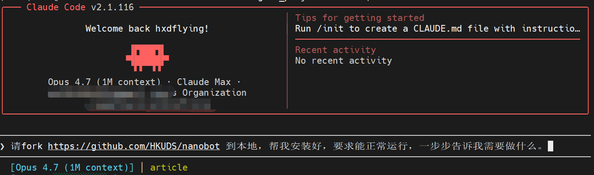
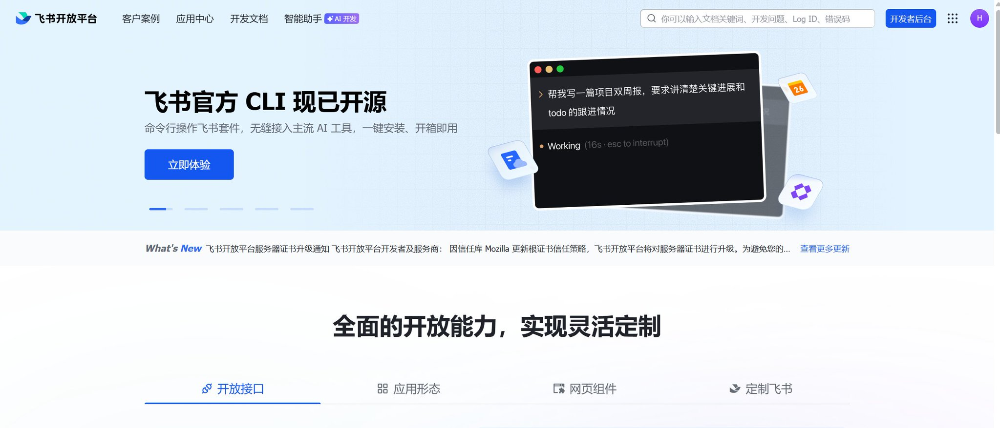
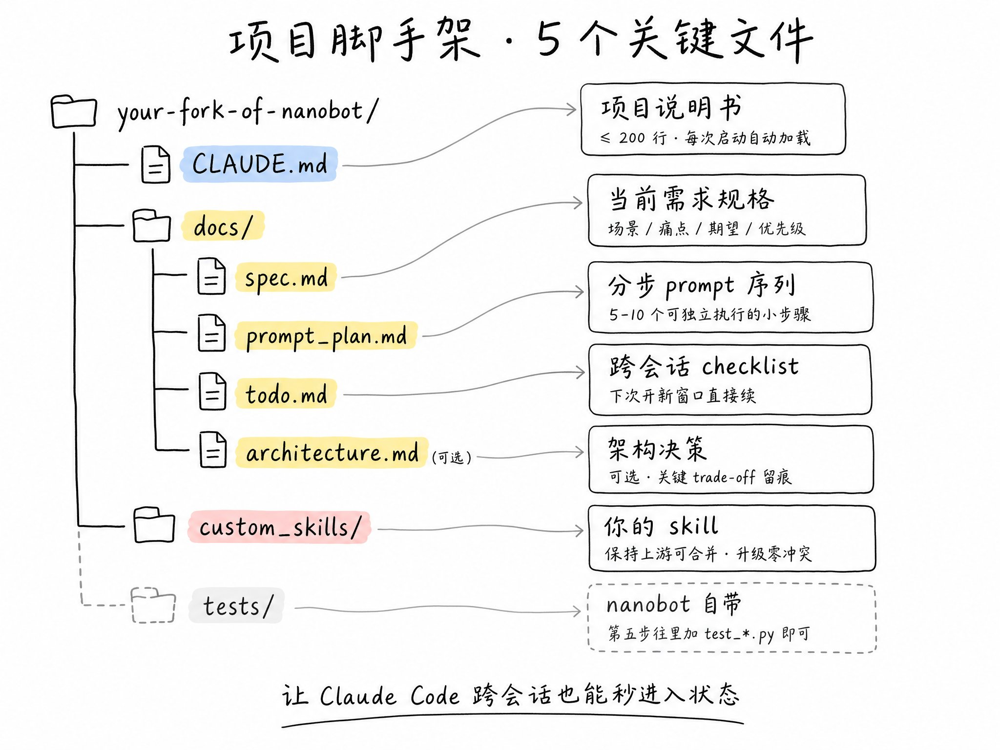
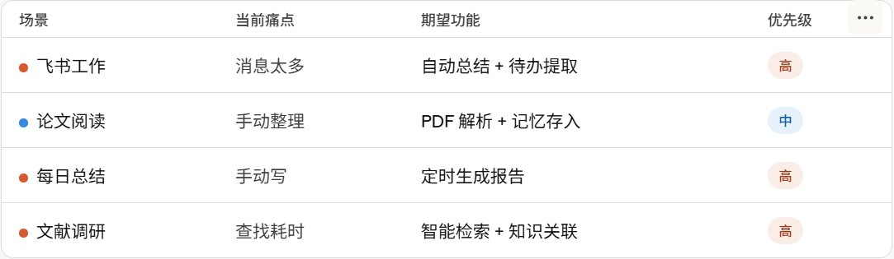
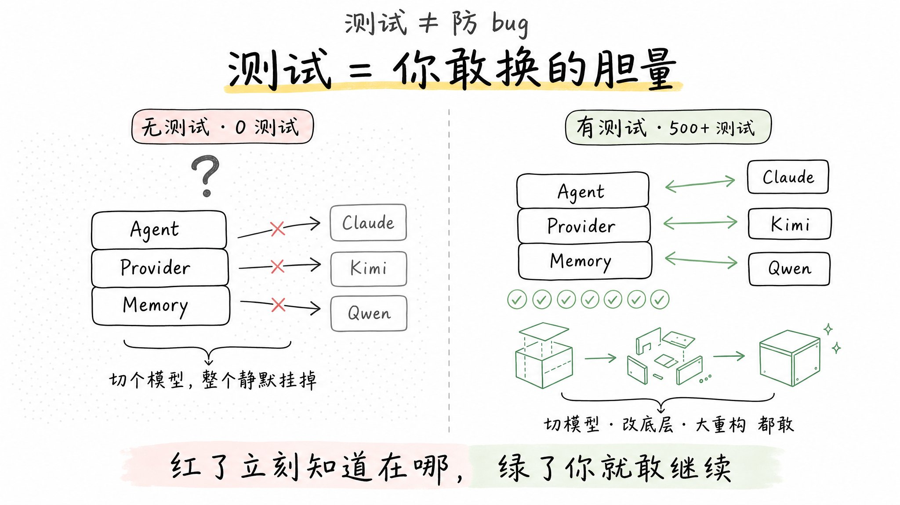

>

核心思路
**不要一上来就从零写，也别直接上功能堆很重的框架。** 选代码少、可读性强、核心循环一目了然的项目，才看得懂、改得动、长得久。
**整体五步流程：**
2. 装 Claude Code + 跑通飞书
3. 建脚手架文件（CLAUDE.md + docs/）
4. 用对话把模糊需求逼成具体 spec
5. 每加功能必须配测试
上手第一周会有点笨拙，但一旦跑顺，后面每加新功能的速度指数级上升。
Step 1：选一个轻量好扩展的基础项目
推荐基座
| 项目 | 特点 | 适合 |
|---|---|---|
| **Pi-mono** | 非常干净的 Agent 基础包，极简风格 | 喜欢极简的同学起手 |
| **Nanobot ✅（最终选）** | ultra-lightweight，几千行核心代码跑完整 Agent 循环，自带 memory/skills/multi-provider，内置飞书/Slack/Telegram/Discord | 扩展性极强，省三个月工程脚手架时间 |
判断标准
Step 2：用 Claude Code 装上，把飞书也跑通
快速安装

把项目地址丢给 Claude Code：
请fork https://github.com/HKUDS/nanobot 到本地，帮我安装好，要求能正常运行，一步步告诉我需要做什么。
配置飞书通道

飞书是主力通道，不需要公网 IP（Nanobot 支持长连接！）。
**飞书开放平台 4 步：**
2. 启用「机器人」能力，申请权限：`im:message`、`im:message.p2p_msg:readonly`、`cardkit:card:write`
3. 事件订阅选 **长连接模式**——不用公网 IP、不用配 webhook
4. **点「版本管理与发布」把应用发版**，否则权限不生效（90% 的人卡在这步）
搞完后跟 Claude Code 说：
帮我运行Nanobot。
就能在飞书上跟自己的 Agent 聊天了。
Step 3：先建脚手架文件
不要一跑通飞书就喊 Claude Code 加功能。先花 **30 分钟建好这套文件**，让 Claude Code 跨会话也能秒进入状态。
项目结构
nanobot/ ├── CLAUDE.md ← 项目说明书（自动注入） ├── docs/ │ ├── spec.md ← 需求规格 │ ├── prompt_plan.md ← 分步执行计划 │ └── todo.md ← 跨会话 checklist └── tests/ ← 已有（nanobot自带）

CLAUDE.md（核心）
相当于 Claude Code 的项目说明书
相当于 Claude Code 的项目说明书，每次启动自动读。**控制在 200 行以内**（社区共识不超过 300 行），只留推不出来的非显然信息：
## 测试规则 修改任何代码时必须： - 同步加或改 tests 下对应的 test_*.py - 外部依赖用 MagicMock 替换，不发真请求 - 至少覆盖正常、空输入、出错三种情况 - 写完跑 pytest -v，全绿才算完
docs/ 目录（三件套）
来自 Harper Reed 定型的「LLM codegen 三件套」：
开工第一句永远是：
读CLAUDE.md和docs/todo.md，告诉我下一步要做什么。
Step 4：用对话把模糊需求逼成具体 spec
四小步流程
**1. 先用一张表列模糊需求**

| 场景 | 痛点 | 期望 | 优先级 |
|---|---|---|---|
| 例：群里有人发 PDF | 不能直接解析 | 自动提取文字+表格 | P0 |
逼自己用一行字说清楚每个场景的痛点和期望。
**2. Brainstorm → `docs/spec.md`**
挑表里优先级最高的，开 Claude Code 切 plan mode：
我想给nanobot加一个PDF解析能力。先不要写任何代码，用对话方式反复追问我， 直到把功能边界、输入输出格式、错误处理、性能上限、是否持久化到记忆、 跟现有skill的边界都问清楚，最后写到docs/spec.md。
模型五分钟就能抛出你拍脑袋想半天也想不全的问题。
**3. Plan → `docs/prompt_plan.md` + `docs/todo.md`**
读docs/spec.md，拆成5-10个可独立实现、可独立测试的小步骤， 每一步配一段prompt，写到docs/prompt_plan.md，同时维护docs/todo.md。
**4. 把需求映射到架构层**
| 需求类型 | 落点 |
|---|---|
| 需要强隐私 | 强化本地记忆模块 |
| 需要多模型 | 完善 Provider 层 |
| 需要稳定性 | 加测试和定时任务 |
| 需要新能力 | 写 SKILL.md 或 MCP server ✅ **最常见** |
| 只是规则约束 | 改 CLAUDE.md，**不用写代码** |
Step 5：每加一个功能，必须配一组测试

写完跑通就走人？两周后换模型改 provider，整个功能静默挂掉都没人知道。
**标准 prompt：**
我刚加的功能帮我写一组测试，要求： 1. 凡是要真连网络或调用外部接口的，用假数据顶替 2. 至少跑三种情况：正常使用、没有数据、出错 3. 风格参照项目里已有的测试文件 4. 写完直接 pytest -v 跑一遍，全绿才算完
进阶：从别的项目「偷」好设计
看到别人成熟项目（Hermes Agent / OpenClaw）的好设计，**别整套搬**。按三层判断：
| 层级 | 做法 | 例子 |
|---|---|---|
| **思想级** | 重写不拷贝 | OpenHands 的 event-stream 设计 |
| **模块级** | 独立抄一个模块 | Hermes 的 Curator（自动重构 skill）、execute_code tool（多步压成一步）、SOUL.md（性格档案） |
| **文件级** | 原样复用 | `.claude/skills/skill-creator/` 的 SKILL.md 文件直接塞进 `skills/` 就能跑 |
进阶玩法：Codex 给 Claude Code 当 Reviewer
配置 3 步
2. 注册成 MCP server：`claude mcp add codex -- codex mcp`
3. 重启会话
使用
用codex review一下docs/spec.md和docs/prompt_plan.md， 重点看需求歧义、边界情况、跟nanobot现有架构的冲突。
两套不同训练分布的模型互相挑刺，免费 QA。
踩坑要点
这个工作流适合谁
**核心心法：** 碰见问题→理解问题→用 AI Coding 解决问题，这条路基本一定能走通。重点不是你立刻就懂，而是你愿不愿意把它拆成看得懂的部分。
>
>
>
核心となる考え方
**いきなりゼロから書こうとしないでください。また、いきなり重いフレームワークに機能を詰め込もうとしないでください。** コードが少なく、可読性が高く、コアループが一目でわかるプロジェクトを選ぶことで、理解でき、修正でき、長く育てられるものになります。
**全体の5ステップフロー：**
2. Claude Codeをインストール + 飛書（Feishu）を通す
3. スキャフォールドファイルを構築する（CLAUDE.md + docs/）
4. 対話で曖昧な要件を具体のspecに落とし込む
5. 機能追加ごとにテストを実装する
最初の1週間は少しぎこちないですが、一度軌道に乗れば、新しい機能を追加するスピードは指数関数的に向上します。
Step 1：軽量で拡張しやすいベースプロジェクトを選ぶ
推奨ベース
| プロジェクト | 特徴 | 向いている人 |
|---|---|---|
| **Pi-mono** | 非常にクリーンなAgent基本パッケージ、ミニマル設計 | ミニマル志向の方の入門に |
| **Nanobot ✅（最終選定）** | ultra-lightweight、数千行のコアコードで完全なAgentループを実行、memory/skills/multi-providerを内蔵、飛書/Slack/Telegram/Discord対応 | 拡張性が非常に高く、3ヶ月分のエンジニアリングスキャフォールド作業を削減 |
判断基準
Step 2：Claude Codeでインストールし、飛書も通す
クイックインストール
プロジェクトのアドレスをClaude Codeに渡します：
リポジトリ https://github.com/HKUDS/nanobot をローカルにforkして、インストールしてください。正常に動作するように段階的に教えてください。
飛書チャネルの設定
飛書がメインチャネルです。パブリックIPは不要です（Nanobotは長連接続に対応しています！）。
**飛書開放プラットフォームの4ステップ：**
2. 「ロボット」機能を有効にし、権限を申請：`im:message`、`im:message.p2p_msg:readonly`、`cardkit:card:write`
3. イベント購読は**長連接続モード**を選択——パブリックIP不要、webhookの設定不要
4. **「バージョン管理とリリース」からアプリをリリースする**、そうしないと権限が有効になりません（90％の人がここで詰まります）
完了したらClaude Codeに伝えます：
Nanobotを起動してください。
飛書で自分のAgentと会話できるようになります。
Step 3：先にスキャフォールドファイルを構築する
飛書が通ったからといって、すぐにClaude Codeに機能追加を依頼しないでください。まず **30分かけてこのファイル群を構築**し、Claude Codeがセッションをまたいですぐに状態に入れるようにしましょう。
プロジェクト構造
nanobot/ ├── CLAUDE.md ← プロジェクト説明書（自動注入） ├── docs/ │ ├── spec.md ← 要件仕様 │ ├── prompt_plan.md ← 分割実行計画 │ └── todo.md ← セッション間のchecklist └── tests/ ← 已有（nanobot自带）
CLAUDE.md（核心）
相当于 Claude Code 的项目说明书
Claude Codeのプロジェクト説明書であり、起動時に自動で読み込まれます。**200行以内**に収め（コミュニティの合意として300行を超えない）、推論で導き出せない非自明な情報だけを残します：
## テストルール コードを修正する際は必ず： - 対応する tests 配下の test_*.py を追加または更新する - 外部依存は MagicMock で置き換え、実際のリクエストは送らない - 少なくとも正常系、空入力、エラー系の3ケースをカバーする - 完了後 pytest -v を実行し、すべてパスしてから完了とする
docs/ ディレクトリ（三種の神器）
Harper Reedが確立した「LLM codegen 三種の神器」：
作業開始の最初の一言は常に：
CLAUDE.mdとdocs/todo.mdを読んで、次に何をすべきか教えてください。
Step 4：対話で曖昧な要件を具体のspecに落とし込む
4つの小さなステップ
**1. まず表で曖昧な要件をリストアップする**
| シナリオ | 課題 | 期待 | 優先度 |
|---|---|---|---|
| 例：グループで誰かがPDFを送信 | 直接解析できない | テキスト+表を自動抽出 | P0 |
各行で各シナリオの課題と期待を一言で明確にします。
**2. Brainstorm → `docs/spec.md`**
表の中で最も優先度の高いものを選び、Claude Codeをplan modeで起動します：
nanobotにPDF解析機能を追加したいと考えています。まずコードは一切書かずに、対話形式で質問を重ねて、 機能の境界、入出力形式、エラーハンドリング、パフォーマンス上限、メモリへの永続化の有無、 既存のskillとの境界まで明確にした上で、docs/spec.mdに書き出してください。
モデルは5分であなたが頭を悩ませて考えても出てこないような質問を次々と投げかけてきます。
**3. Plan → `docs/prompt_plan.md` + `docs/todo.md`**
docs/spec.mdを読んで、5〜10個の独立して実装・テスト可能な小さなステップに分割し、 各ステップにpromptを付けてdocs/prompt_plan.mdに書き、同時にdocs/todo.mdも更新してください。
**4. 要件をアーキテクチャ層にマッピングする**
| 要件タイプ | 対応箇所 |
|---|---|
| 強固なプライバシーが必要 | ローカルメモリモジュールを強化 |
| マルチモデルが必要 | Provider層を拡充 |
| 安定性が必要 | テストと定期タスクを追加 |
| 新しい能力が必要 | SKILL.mdまたはMCP serverを作成 ✅ **最も一般的** |
| 単なるルールの制約 | CLAUDE.mdを修正、**コードは書かない** |
Step 5：機能を追加するたびに、必ずテストをセットで実装する
書いて動いたら終わり？2週間後にモデルを変更してproviderを変えたら、機能が黙って壊れていても誰も気づきません。
**標準prompt：**
今追加した機能に対してテストを書いてください。要件： 1. 実際にネットワーク接続や外部APIを呼び出す必要があるものは、すべてダミーデータで代用する 2. 少なくとも3ケース実行する：正常使用、データなし、エラー発生 3. スタイルはプロジェクト内の既存のテストファイルに準拠する 4. 書き終えたら直接 pytest -v を実行し、すべてパスしてから完了とする
応用：他のプロジェクトから良い設計を「盗む」
他の成熟したプロジェクト（Hermes Agent / OpenClaw）の良い設計を見つけたら、**全部を丸ごとコピーしないでください**。3つの階層で判断します：
| 階層 | 方法 | 例 |
|---|---|---|
| **思想レベル** | 書き直してコピーしない | OpenHandsのevent-stream設計 |
| **モジュールレベル** | モジュール単位で独立して移植 | HermesのCurator（自動リファクタリングskill）、execute_code tool（複数ステップを1つに圧縮）、SOUL.md（性格プロファイル） |
| **ファイルレベル** | そのまま再利用 | `.claude/skills/skill-creator/` のSKILL.mdファイルをそのまま `skills/` に入れれば動作 |
応用：CodexにClaude CodeのReviewerをさせる
設定3ステップ
2. MCP serverとして登録：`claude mcp add codex -- codex mcp`
3. セッションを再起動する
使い方
codexを使ってdocs/spec.mdとdocs/prompt_plan.mdをレビューしてください。 要件の曖昧さ、境界ケース、nanobotの既存アーキテクチャとの競合を重点的に確認してください。
異なる訓練分布を持つ2種類のモデルが互いに批判し合う、無料のQAです。
ハマりポイント
このワークフローに向いている人
**核心の心構え：** 問題に直面する→問題を理解する→AI Codingで問題を解決する、この道筋は基本的に必ず通じます。重要なのはあなたがすぐにすべてを理解することではなく、理解可能な部分に分解しようとする意志です。
>
>